All games, grouped as the app groups them. What each game asks you to do, the skills involved, and what it measures.
Game categoryBrain twisters
| Game | What you do | Skill involved | What it measures |
|---|---|---|---|
| Aliens 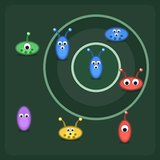 |
You are the gate agent at an alien spaceport. Each gate displays its boarding pass — a rule about alien traits such as "3 EYES", "NOT BLUE" or "1 EYE AND NOT BLUE". Aliens wander into a gate's queue by themselves; you drag each one onto the boarding ramp if it matches that gate's pass, or back out into the hall if it does not. Let a queue fill and new arrivals are turned away, each costing a miss. After a while the passes hide behind a "?", so you work from memory. From level 4 the passes swap between gates, some gates board everything except their pass, and one waiting alien at a time is called and must be dealt with before its countdown runs out. | Holding several rules at once and keeping straight which belongs to which gate — including opposite ones, since some gates accept and others refuse — while being pulled from gate to gate rather than working in your own order. |
|
| Sorting Robots 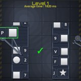 |
Two conveyor belts run down the screen, each with its own rule written at its head. A frame closes around one item and you judge it against the rule of the belt it is on — swipe right to pick it up, left to leave it. After a few rounds the rule labels fade away and you have to keep both rules in your head. Which rules appear, and which belt each lands on, is drawn fresh each time you play. | Holding two rules at once once the labels are gone, and applying the right one to the right belt. |
|
| Bucket Madness 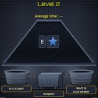 |
An item falls from the top of the screen. Three buckets wait below: one for each of two rules, and a dumpster in the middle for items matching neither. Send it to the right one before it lands. Each item carries two objects side by side and only one of them can match a rule. The rules are shown for a few seconds at the start of a level, then hidden after a number of rounds. | Applying a rule fast enough under time pressure, and from memory once the labels are gone. |
|
| Apprentice 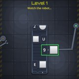 |
Watch a robot sort items on one or two conveyor belts without being told what it is looking for. Once it has shown enough examples, a multiple-choice question asks you to name the rule it was following — one question per belt. | Working a rule out purely from watching someone else, with no feedback from your own attempts. |
|
| Change 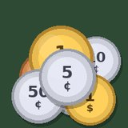 |
A target amount and a pile of overlapping coins, from a penny up to a dollar. Drag coins into the tray and press Pay. There is no running total — you judge it yourself. Every board can be paid exactly. | Adding up in your head under time pressure, and whether you settle on a plan or keep revising it. |
|
Game categoryAttention & Speed
| Game | What you do | Skill involved | What it measures |
|---|---|---|---|
| Gorilla 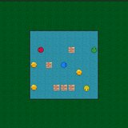 |
Collect all the coins in a room while monsters chase you — touching one costs a life. Meanwhile gorillas walk past around the edges of the room. Once the coins are gone, or the clock runs out, you are asked how many gorillas went by. Only the exact number earns the bonus. | Keeping a count running in the background while your hands and eyes are busy with something else. |
|
| Wolves 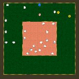 |
You are a sheepdog on a fenced farm. The compound fence falls apart over time and sheep wander out; walking near a frightened sheep sends it back. Wolves turn up too. The level is judged on how much of the flock is still inside when the clock runs out. | Staying alert through long quiet stretches, and reacting once something finally happens. |
|
| Pinpoint 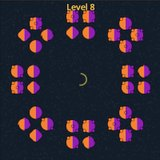 |
A shape flashes in the centre of the screen and, a moment later, a dot flashes off to one side. Both vanish. Eight clusters of shapes then appear, one in each direction, and you tap the shape you saw — in the direction the dot was. | Catching two things that arrive almost together, one in front of you and one to the side. Several other directions hold the right shape too, so remembering only the shape puts you in the wrong place, and remembering only the place leaves you guessing between shapes. |
|
| Witness | The same brief flash of a shape in the centre and a dot to one side, but here you must get both: name the shape and say which way the dot was. Both have to be right for the round to count. | Holding two separate details of a single moment, either of which is easy to lose alone. |
|
| Glimpse | A shape appears for a moment at one spot around the edge of the screen. After a pause, several shapes appear at other edge positions and you pick the one you saw. | What registers at the edge of your vision, where you are not looking directly. |
|
| Lineup | You see one image briefly, then after a short delay pick it out of a set of similar ones as fast as you can. | Recognising something again with convincing wrong answers sitting beside it. |
|
Game categoryMemory & Speed
| Game | What you do | Skill involved | What it measures |
|---|---|---|---|
| Dino 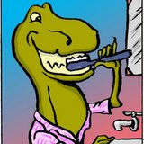 |
One card at a time. Swipe right if you have already seen that card earlier in this round, left if it is new. | How long a picture stays recognisable, and telling "I have seen this" from "this is new". |
|
| Dino N-Back 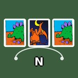 |
One card at a time, and you say whether it matches the card a fixed number of positions back — two back, three back, and so on. | Holding a short running list in mind and updating it with every single card. |
|
| Moving Cards 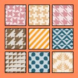 |
Cards are shown face-up for a few seconds, then turn face-down. On most levels they also move around the screen. Click them in the order you memorised. | Keeping an order in mind while the things themselves change places. |
|
Game categoryPlanning
| Game | What you do | Skill involved | What it measures |
|---|---|---|---|
| Taxi 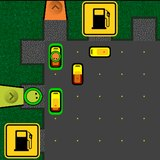 |
You own a taxi station. Select a taxi, tap a waiting customer, and it drives them to their destination and is paid on arrival. Fuel costs money for every tile driven and every second spent idling, a new taxi costs money, and a taxi that runs dry is gone for the rest of the game. The score is your money, and the game ends if it reaches zero. | Planning several moves ahead while a running cost ticks away underneath. |
|
| Storm 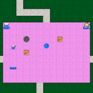 |
A storm is coming through your roof. Put containers and duct tape under the leaks, empty full containers at the drains, and keep water off the floor. On the later levels the house has more rooms than fit on the screen at once, so part of it is always out of sight. | Deciding what to deal with first when several things need you at once — and, once the house is bigger than the screen, keeping track of which leak is in which room without being able to see them. |
|
| Guidem 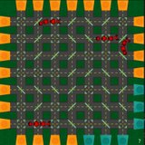 |
Get all the cars to their parking spots without letting them collide. You never drive them — you tap a junction to change its door and send them a different way. | Directing several moving things at once without steering any of them. |
|
| Pneumo 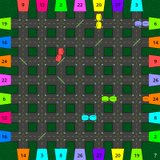 |
Capsules travel through pneumatic tubes and each belongs at one particular receiver. Turn the doors at junctions to route them; a door stays exactly as you left it. Two capsules that touch destroy each other. | Working ahead of the capsules rather than reacting to them. |
|
| Parkem 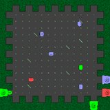 |
Creatures drive themselves towards their own parking spots and you win by stopping every one of them. You never steer them — you shut doors at junctions to turn them aside, and a shut door swings open again after four seconds. | Timing an action so that it lands with the creature rather than before it. |
|
Game categoryReflexes
| Game | What you do | Skill involved | What it measures |
|---|---|---|---|
| Whack 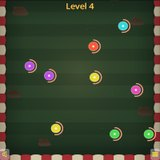 |
A target appears somewhere on screen and you tap it before it goes. Only taps landing inside it count. Some of what appears is a decoy and should be left alone — and some rounds hold nothing but decoys, where touching none of them earns you points. | Reacting quickly, landing accurately, and stopping yourself from hitting something you should not. |
|
| Nudge 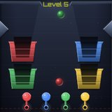 |
Coloured balls fall into a walled arena with a basket for each colour down the sides. You drag a tool — a disc on a stick — and push each ball up and over the rim so it drops into the basket of its own colour. A tool only touches balls of its own colour; every other colour passes straight through it. | Fine physical control, and the cost of swapping from one tool to another. |
|
| Typit 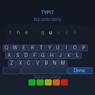 |
Type on a custom on-screen keyboard. Every keypress records exactly where your finger landed, not just which key it hit. | Typing speed and accuracy, and whether particular keys are drifting — your finger landing steadily off-centre on one of them. |
|
Game categoryRecognition
| Game | What you do | Skill involved | What it measures |
|---|---|---|---|
| Couples 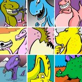 |
A grid of cards in which exactly one image appears twice, every other one being unique. Find the pair and tap both. | Searching in an orderly way, and remembering which cards you have already ruled out. |
|
| Friends 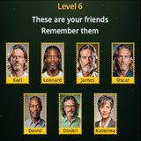 |
You are shown a small group of friends — a face with a first name under each — and told to remember them. They disappear, then strangers arrive one at a time and for each you answer: is this one of my friends? Say Hi, or Ignore. Each arrival starts tiny and grows to full size over about four seconds; leave it that long and it counts as Ignore. Answering early is worth more. | Recognising faces you were asked to learn, among people you have never met, before time runs out on each one. |
|
| Weris 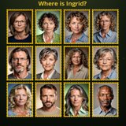 |
Study one person and their name, then find that same face in a grid of others as fast as you can. No names this time, and the grid grows from four faces up to twenty. | How much harder searching gets as the crowd grows. |
|
| Polka Dots 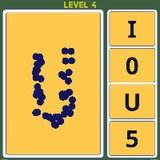 |
A scatter of dots is arranged so that it outlines a letter or a digit. Tap which one it is from the options offered. On some levels the options disappear after a few seconds. | Reading a whole shape from an incomplete pattern. |
|
Game categoryMemory & Navigation
| Game | What you do | Skill involved | What it measures |
|---|---|---|---|
| Mind Palace 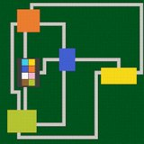 |
Wander a castle of rooms joined by corridors, taking one coin from each room. Once every room has been visited and every coin taken, the view pulls back to the whole floor plan and you are asked, room by room, what colour that room's floor was. | Building a map in your head while your attention is on collecting coins. |
|
| Lights Out 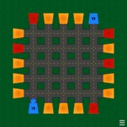 |
A maze of pipes is shown lit for five seconds. Then the lights go out — the markers vanish and the maze dims — and you walk it from memory to your own destination, avoiding the bombs. | How much of a scene survives five seconds of looking at it. |
|
| Deliverem 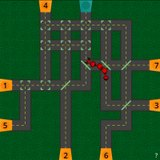 |
A delivery truck drives itself around a maze of pipes and you never steer it. What you control is the doors: tap one to rotate it, and a truck passing through is turned ninety degrees. The whole yard stays in view. Docks must be reached in the right order — passing the wrong one does nothing at all. | Remembering a delivery order and setting the route up in advance rather than reacting. |
|
| Delem FP 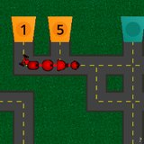 |
The same delivery job, but you steer the truck yourself. The whole board is shown for five seconds first — that is your one look at it — then the camera zooms in and follows the truck, so from there the route comes from memory. Docks still have to be reached in order. | Finding your way from memory with no overview left to check against. |
|
Game categorySerenity
| Game | What you do | Skill involved | What it measures |
|---|---|---|---|
| Breathe | Set a session length, then tap the screen once per breath at the same point in each cycle — the end of each out-breath, say. A large circle breathes along with the rhythm it picks up from you. | How even your breathing is. The evenness, not the rate. |
|
| Buoy 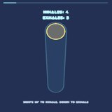 |
Swipe your finger up as you breathe in and down as you breathe out, floating up and down with your own rhythm. | Holding a rhythm with a movement rather than a tap. |
|
| Crack the Safe 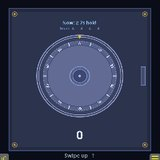 |
Open a combination safe with your breathing: swipe up, hold, swipe down, hold — each part timed to a guided pattern. Every full cycle done in time turns the lock a little further. | Matching your breathing to a set rhythm rather than your own. |
|
| Mother Snake 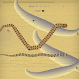 |
Follow the mother snake as she traces a path set by a breathing pattern — rising as you breathe in, level as you hold, falling as you breathe out. | Smooth continuous following, which none of the tapping games can show. |
|
Appendix A
It stays on your device. Nothing is sent anywhere. There is no account and no server — the app is not connected to anything, and nobody else can see any of it.
It is shown back to you and nothing else is done with it. The app can tell you that a game has been slower than your usual range across the last several sessions. That is a description of your own play, not a finding about your health.
These games are not a medical test and cannot diagnose anything. Plenty of ordinary things move these numbers: a bad night, a noisy room, a new phone, a cold, being in a hurry.
That is why the app is slow to say anything at all. A single unusual session is not remarked on; it takes a run of them, going the same way, before anything is pointed out. If something does look genuinely different to you over months, that is a conversation for a doctor — and these numbers might be a useful thing to bring, not an answer in themselves.